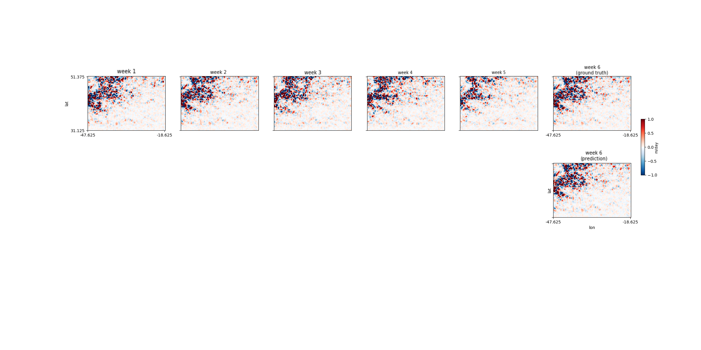

Artifical Intelligence (AI): A program that can sense, reason, and adapt.
Machine Learning:
Deep Learning:
Difference Between Machine Learning and Deep Learning:
Our project is essentially the first part of the process of using convolutional neural networks to predict what ocean eddies will look like in the future. By analyzing the complicated patterns of vertical velocity in our large 20 year dataset, an algorithm can predict where these patterns will show up later on. This can clue scientists in to important ocean activity before it occurs, giving them a better chance to study it.
Our data can be used to train a computer vision algorithm. Training is putting lots of data through the algorithm to teach it how it should respond to new data. These are the steps for using training data on an algorithm:
We have not done this with our dataset yet, but for this data, we would feed the algorithm multiple weeks worth of data, then have it predict how the data for the week after those would look. The algorithm’s guess (or output) would then be compared to the real data for that week (the label), so it can recalibrate the weights of the network to make future predictions more correct through back propagation. Here is an example of this process from our mentor Meera's work:
